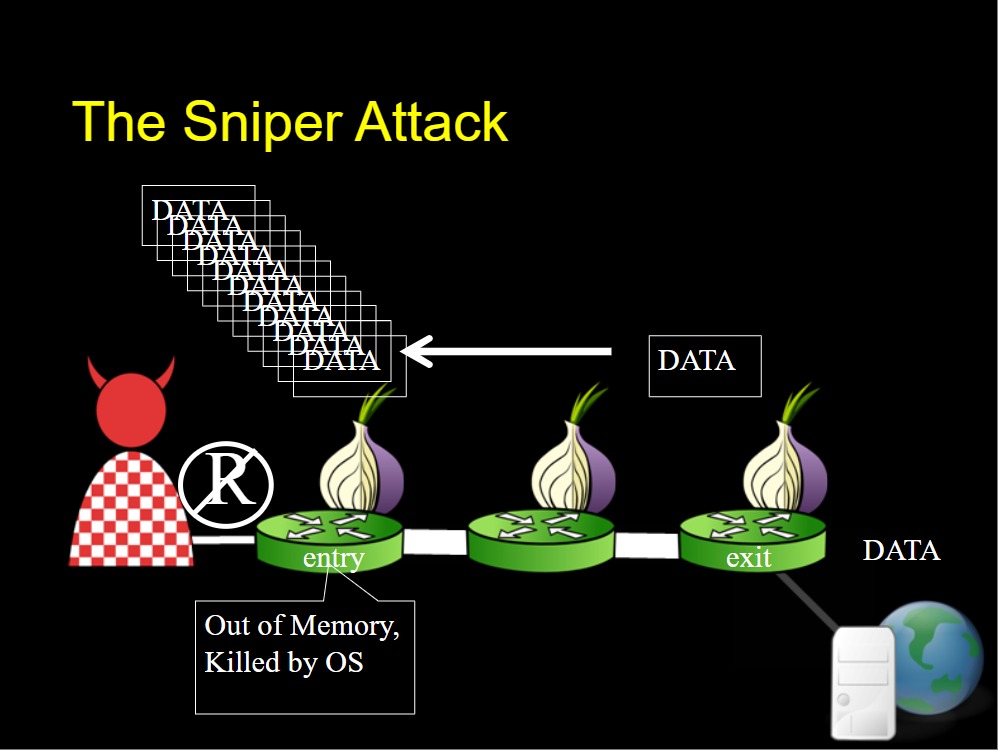

Anonymity is not a recent concern. The desire to be able to speak or act without fear of repercussions has been one that has existed for thousands of years. Anonymity can be useful to express opinions without a person’s identity itself biasing the people listening for or against the topic. Even in the United States, founding fathers Alexander Hamilton, James Madison, and John Jay wrote the Federalist Papers to sway the vote in favor of ratifying the Constitution, all anonymously published, using a pseudonym.
However, anonymity can be used for good or for bad. Whistleblowers from tyrannical governments or companies conduction illegal business practices need anonymity in order to be able to tell reporters or governments the truth. Without it, the repercussions could range from simply losing their jobs to violence inflicted upon them and anyone related to them. Anonymity is also greatly helpful for people seeking advice, both mental or physical, for situations in which being identified could be embarrassing. Anonymity also helps people express themselves and be evaluated for it honestly, without their age, ethnicity, gender, or any other factors affecting how they are viewed.
On the other hand, anonymity could also be used for bad, illegal things as well. It could be something relatively smaller, like posting defamatory or even just plain mean things about people, as we might see on a Reddit thread or the YouTube comment section. But it often gets a lot worse too. Distribution of child pornography has been a blight on the world, and the anonymity that the internet provides has greatly aided its distributors. The ethics surrounding the illegalization of narcotics is a separate issue, but the anonymity that the internet provides allows people to sell them online, unchecked and untested. Even assassins can be hired on the internet.
The internet, by itself, is not completely anonymous though. It is not difficult to track a user that is using any kind of internet service. That is unless the user takes steps to protect their identity and prevent their viewing habits from being tracked. Anonymity networks make use of special overlay relay networks that are distributed around the world so that the location of each participant is hidden from the others. The traffic of a user is moved through a distributed worldwide set of volunteer relay servers, which effectively makes the user’s traffic hidden from any surveillance, or at least makes it very difficult to view.
Tor is one such anonymous network, initially developed by the US Naval Research Laboratory and further developed by DARPA, to protect US intelligence communications. It is popular now because it is open source and free to use to the public. It makes use of onion routing, which encapsulates the data in multiple layers of encryption, like an onion. At each relay node, a layer is decrypted until the final relay node, at which point the innermost layer is decrypted and the actual message is sent to the destination, without revealing where it came from. Thus, Tor is extremely popular among those who wish to anonymize their internet traffic. Consequently, it is also a target for attacks, since adversaries would want to break through and prevent this anonymity.
Jansen et al. presented a new denial of service attack against Tor that could selectively and anonymously disable Tor relays, published in the Defense Technical Information Center. The reason this attack was a big deal was that this attack could be perpetrated at a very low cost to the attacker. The attacker would need very modest computational resources to pull this off. The attack worked by remotely crashing a relay by exhaustively consuming its memory resources. The paper presented three attacks that used two techniques.
In this attack, the attacker has control of the exit relay aside from the client. To perpetrate this attack, the attacker builds a circuit from the client to its own controlled exit relay via the victim entry relay. Since the attacker controls the exit relay, they can effectively generate and send as much data as it wants back through the circuit, ignoring all the size limits. On the client end, the client can stop reading from the TCP connection, forcing the target entry relay to buffer the data, until it runs out of memory and crashes the application.
This attack works as a reversal of the previous attack. In this one, the attacker has control a destination server aside from the client. To perpetrate this attack, the attacker builds a circuit from the client to its own controlled destination server via the victim exit relay. The attacker-controlled client can effectively generate and send as much data as it wants through the circuit, ignoring all the size limits. On the controlled destination server end, it can stop reading from the TCP connection, forcing the target exit relay to buffer the data, until it runs out of memory and crashes the application.
While the previous two attacks are effective, they are not very efficient. There are two reasons for this.
In this attack, the attacker only has control of the client. The circuit is first created with the victim entry
relay. The client then sends a request via the circuit towards the exit relay to fetch a large file. The exit
relay
starts sending the requested data back, at which point the client stops reading from the TCP connection with the
entry relay. This triggers the relays's buffering mechanism and the relay buffers 1000 cells.
Now, the client has to effectively trick the exit relay into sending more data. It can accomplish this by
sending a
SENDME cell to the exit. This SENDME cell is a Tor control cell that tells a relay that the client has consumed
the
data and instructs it to send more data. As long as this SENDME cell is sent periodically, the exit relay will
not
break the connection and will continue to send the data, eventually overwhelming the victim entry relay's
capacity.
The bandwidth cost for the attacker is only the cost of sending the SENDME cells.
The best part is that the attacker can be anonymized themselves by simply using another instance of Tor to run the attack from, ironically using the same service to protect themselves that they are attacking.
The paper discusses a few defenses that can be employed against the Sniper Attack. It must be noted here that the authors communicated to the Tor Project all of the details about the attack, and Tor has implemented defenses against it since then.
This paper provides a very strong case for the attack working. The Sniper Attack is a well-described, systematic approach to disabling the Tor network. It would have been easy for them to have simply described the attack and its implications and left it at that. So I liked that they also provided multiple ways to secure against their own attack, and also pointed out the weakness in some of those methods as well. I further liked that the authors communicated all of their research with the Tor Project and worked with them to develop workarounds that are now officially in place.
Speaking of the defenses, however, I'm not sure I fully agree with the defenses. I do find that even their best defense wasn't fully perfect. Killing circuits based on any given metric will cause many false positives to occur and would cause benign circuits to be killed. The defense would thus indirectly but effectively actually cause a denial of service.
This was a major paper about an attack developed by the US Naval Research Laboratory, so it was understandably cited by a large number of future publications.
Some of the other papers that cite this paper:
Relevant to our topic, a paper titled "Enhancing Security and Privacy of Tor’s Ecosystem by Using Trusted Execution Environments" suggested using Trusted Execution Environments like Intel SGX to better protect the anonymous network. The authors developed a version of Tor called SGX Tor that incorporated this suggestion. They tested their new method to make sure it wouldn't succumb to the Sniper Attack, and now list it among the attacks that their SGX Tor implementation can thwart.